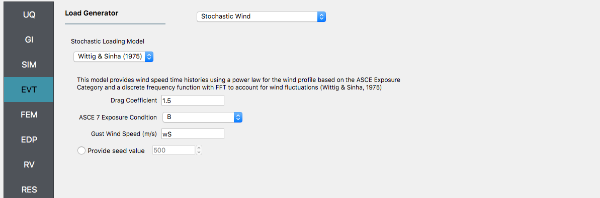
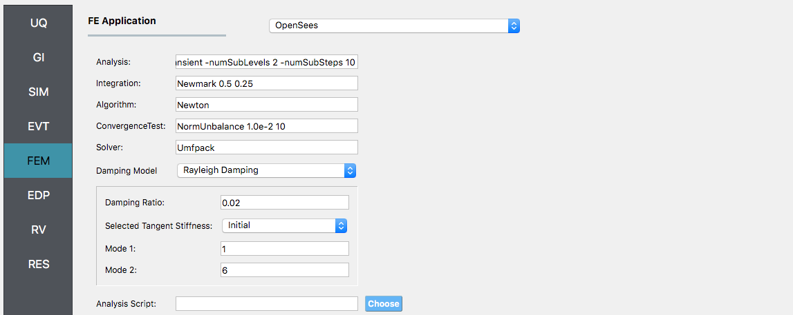

9 Story Building: Sampling Analysis¶
Consider the problem of uncertainty quantification in a nine story steel building. The building being modelled is the 9 story LA building presented in the FEMA-355C report. From the description in Appendix B of the FEMA document the building is a 150 ft square building with a height above ground of 120 ft with a weight of approx. 19,800 kips. Eigenvalues are shown in Table 5.1. of the FEMA document to be between 2.3 sec and 2.2 sec depending on connection detals. For this example (and for demonstrative purposes only), this building will be modelled as a shear building with 10 nodes and 9 elements, as shown in following figure. For loading, the Stochastic Wind Generation tool will be used with the gust wind speed being treated as a random variable with a normal distribtion described by a mean \(\mu_{gustWS}=20 \mathrm{mph}\) and standard deviation \(\sigma_{gustWS} =3 \mathrm{mph}\).

The structure has uncertain properties that all follow normal distribution:
- Weight of Typical Floor(
w): mean \(\mu_w=2200 \mathrm{kip}\) and standard deviation \(\sigma_w =200 \mathrm{kip}\) (COV = 10%) - Story Stiffness(
k): mean \(\mu_k=1600 \mathrm{kip/in}\) and standard deviation \(\sigma_k =160 \mathrm{kip/in}\) (COV = 10%)
::: {.note} ::: {.title} Note :::
- For the mean values provided the natural period of the structure is 2.27 sec.
- The choice of COV percentages is for demonstrative purposes only.
- The exercise will use both the MDOF,
lblMDOF{.interpreted-text role="numref"}, and OpenSees,lblOpenSeesSIM{.interpreted-text role="numref"}, structural generators. For the OpenSees generator the following model script, :weuq-01:[Frame9Model.tcl \<src/Frame9Model.tcl>]{.title-ref}.
::: {.literalinclude language="tcl"} src/Frame9Model.tcl :::
- The first lines containing
psetwill be read by the application when the file is selected and the application will auto-populate the random variableswandkin the RV panel with this same variable name. It is of course possible to explicitly use random variables without thepsetcommand by \"RV.**variable name\" in the input file. However, no random variables will be auto-populated if user chooses this route. :::
::: {.warning} ::: {.title} Warning :::
Do not place the file in your root, downloads, or desktop folder as when the application runs it will copy the contents on the directories and subdirectories containing this file multiple times (a copy will be made for each sample specified). If you are like us, your root, Downloads or Documents folders contains and awful lot of files and when the backend workflow runs you will slowly find you will run out of disk space! :::
Sampling Analysis¶
Problem files :weuq-01:[/]{.title-ref}
To perform a Sampling or Forward propagation uncertainty analysis the user would perform the following steps:
- Start the application and the UQ Selection will be highlighted. In the panel for the UQ selection, keep the UQ engine as that selected, i.e. Dakota, and the UQ Method Category as Forward Propagation, and the Forward Propagation method as LHS (Latin Hypercube). Change the #samples to 500 and the seed to 20 as shown in the figure.
- Next select the GI panel. In this panel the building properties and units are set. For this example enter 9 for the number of stories, 1400 for building height, and 1600 for building breadth and depth
- Next select the SIM panel from the input panel. This will default in the MDOF model generator. We will use this generator (the NOTE below contains instruction on how to use the OpenSees scipt instead). In the building information panel, the number of stories should show 9 and the story heights 160. In the building Information box specify w for the floor weights and k for story stiffness (in both x and y directions).

::: {.note} ::: {.title} Note :::
To specify instead to use the OpenSees script instead, from thee Model
Generator pull down menu select OpenSees. For the fields in the panel
presented enter the path to the :weuq-01:[Frame9Model.tcl
\<src/Frame9Model.tcl>]{.title-ref} script. For both the Centroid Nodes
(those nodes were the floor loads will be applied) the Response Nodes
(those nodes from which the reponse quantities will be evaluated) as 1
2 3 4 5 6 7 8 9 10 in the panel. The Response nodes will tell model
generator which nodes correspond to nodes at the 4 floor levels for
which responses are to be obtained when using the standard earthquake
EDP\'s.
 :::
:::
- Next select the EVT panel. From the Load Generator pull down
menu select the Stochastic Wind option. Leave the exposure
condition as B. Set the drag coefficient as 1.3 and enter
gustWSfor the 3 sec gust wind speed at the 33 ft height.

- Next choose the FEM panel. Here we will change the entries to use Rayleigh damping, with rayleigh factor chosen using 1 and 6 modes. For the MDOF model generator, because it generates a model with two translational and 1 rotational degree-of-freedom in each direction and because we have provided the same k values in each translational direction, i.e. we will have duplicate eigenvalues, we specify as shown in the figure modes 1 and 6.

- We will skip the EDP panel leaving it in it\'s default condition, that being to use the Standard Wind EDP generator.
- For the RV panel, we will enter the distributions and values for our random variables. Because of the steps we have followed and entries we have made, the panel when we open it should contain the 3 random variables and they should all be set constant. For the w, k and wS random variables we change the distributions to normal and enter the values given for the problem, as shown in figure below.

::: {.warning} ::: {.title} Warning :::
The user cannot leave any of the distributions for these values as constant for the Dakota UQ engine. :::
- Next click on the Run button. This will cause the backend application to launch dakota. When done the RES panel will be selected and the results will be displayed. The results show the values the mean and standard deviation. The peak displacement of the roof, is the quantity 1-PFD-9-1 (first event (tool to be extended to multiple events), 9th floor (in US ground floor considered 0), and 1 dof direction). the PFA quantity defines peak floor acceleration, the RMSA quantity the root mean square of floor accelerations, and the PID quantity corresponds to peak interstory drift.

If the user selects the \"Data\" tab in the results panel, they will be presented with both a graphical plot and a tabular listing of the data. By left- and right-clicking with the mouse in the individual columns the axis change (left mouse click controls vertical axis, right mouse click the horizontal axis).
Various views of the graphical display can be obtained by left and right clicking in the columns of the tabular data. If a singular column of the tabular data is pressed with both right and left buttons a frequency and CDF will be displayed, as shown in figure below.